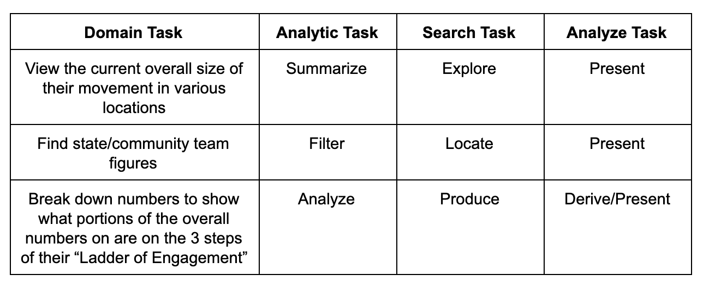
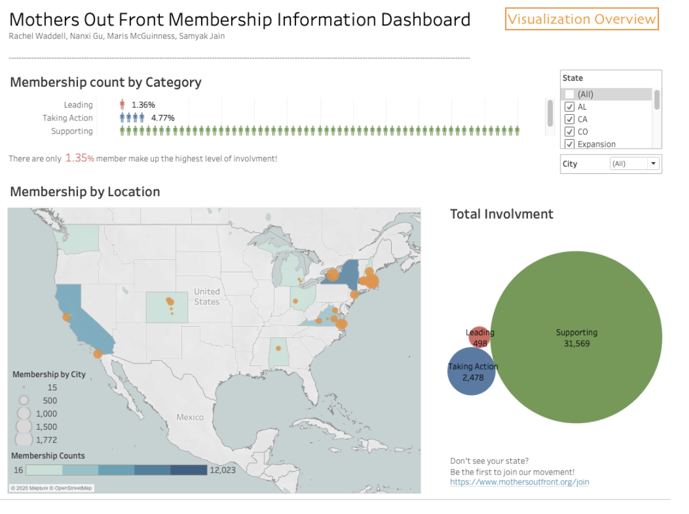

Demo Video
Examples of transitions and linking of the visualizations.
Visualization Explanation
This visualization includes a bar chart with person icons representing the movement's people power at each level of their Ladder of Engagement, and a map of the United States with an associated color scale for each state's fill that represents the total number of members of the movement in that state. To start, the bar chart shows nationwide data at each level, and the map is zoomed out to show the entirety of the country. When the user hovers their mouse over the bars of the bar chart, they can see the exact number represented by that bar. When a user clicks on a state, the map zooms in so that the state is centered and the bar chart filters to only show that state's data. When a user clicks on the selected state a second time, the map zooms back out to show the entire United States, and the nationwide data is displayed once again on the bar chart.
When a user selects a state on the map, the statewide data is consequently displayed on the bar chart. When selecting through different states, the x-scale on the bar chart may change. We decided to dynamically change the scale due to the vast difference in domains for the different states. For example, for some states the domain is 3000, while for others it is only around 100. Another important design decision we made was to order the charts with the bar chart first and the map second. Our most important objective in creating this visualization was to emphasize the disparity between leading and supporting members, the most and least involved members respectively. Thus, we decided to highlight the ladder of engagement breakdown by ordering the bar chart first.
Data Analysis
Mothers Out Front provided us with their membership numbers for each city in which they organize via Google Sheets. The data included weekly values from the conception of each team on sizes of the various steps of the Ladder of Engagement, umbers of members who pay dues, and more, all separated by city. There were also sheets for statewide data and national data.
The attributes were both categorical – each step of the Ladder of Engagemnt (Supporting, Taking Action, and Leading), plus the Dues Paying Memebrs subset, can be considered a category – and numerical – sizes of each category were represented as number of people. To prepare for visualization, the data was downloaded into Excel and condensed to fit on one sheet. This was done so by creating a new table with the columns "State", "City", "Latitude", "Longitude", "Total", "Leading", "Taking Action", "Supporting", and "Dues Paying Members". Each row held one city's data and accessed those numbers by reference to that city's corresponding sheet. Next, a similar sheet was made for the condensed state data with the columns "State", "Total", "Leading", "Taking Action", "Supporting", and "Dues Paying Members", also accessed by reference to the state's corresponding sheet – we chose to do this instead of summing each city per state because some people in a state are not represented by a team within a city and fell into an "Other" category not represented in the city sheet. Finally, a sheet was made for the National data to create the baseline visualizations with the rows "Name", "Total", "Leading", "Taking Action", and "Supporting", with the Name set to National and the numbers accessed by reference. Each sheet was exported into a separate CSV to then be processed in D3 to create visualizations.
Task Analysis
The table below shows the main tasks derived for our visualization.
Since the project is about allowing Mothers Out Front members to retreive membership movements, our main task is to create a map and a chart that can be easy to use and filter for the information that the users requested. The map aims to visualize the distribution of the MOF members in the U.S. and enphasize state differences using a color gradient. By doing this, users could accomplish explore, summarize, browse the data in a high level through color channel. The bar chart will display the membership of different involvement levels in person-shaped bars. In this case, users could compare the length of each bar and pick out the major involvements level. Both the map and the person-chart display the same information, but in different breakdowns and servers different purposes. In addition, brushing and linking will be enabled between the map and person-chart for better filtering experiences. Hover tooltip on the person-chart will provide the membership numbers in texts.
Design Process
Some initial sketches to fulfill the above tasks are as follows:


As you can see, the first and third sketches guided much of our plan. Our final sketch is below.
We soon realized that three graphs would be overwhelming and, though they're both visually interesting, the bar chart with person icons and the bubble chart were representing the same data. We decided to cut the bubble chart in favor of the bar chart in hopes that its concept with the person icons as well as the clear hierarchy of the levels of engagement would make it a better fit for the tasks.
In the usability test, we received feedbacks from the test users saying that the it is not necessary to make the map highlights the state polygon after a click event, because it is interrupting the original color gradient and cause misinterpretations. To improve this, we disable the color highlight from the mouse click event. Another thing that we altered is adding a color legend to the map, so that the users can understand the meaning of the color without additional explanation. Our users also gave great feedback on the styling of the bar chart including: reducing whitespace and adding a tooltip to increase legibility.
Conclusion
In summary, we successfully implememted the visualizations of membership movements for Mothers Out Front, and we created the design using d3 and css. With the visualizations we created, users from the organization can retreive membership information in geospatial and numerical format. For future directions, we would like to connect with the client and continue to improve the visualizations. In addition, we expected to develop a template of visualization so that it can be re-used to take in new updated dataset and service the client.
Acknowledgments
List here where any code, packages/libraries, text, images, designs, etc. that the project leveraged.
- Examples of Choropleth maps from d3 graph gallery.
- Click-to-zoom via transform by Mike Bostock.
- Color legend on Choropleth map by Martin Gonzalez.